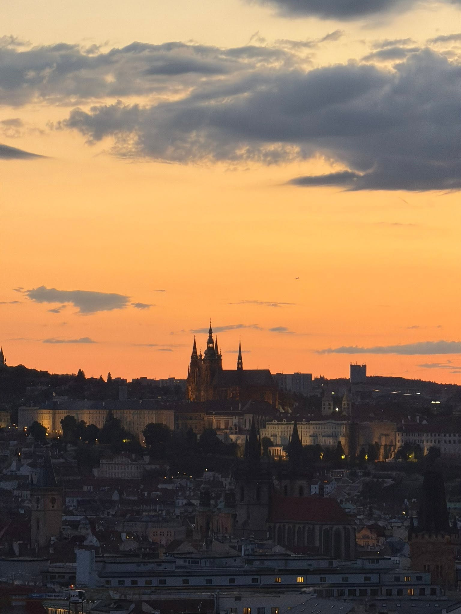

Ke každému chodu
padnoucí drink
Welcome drink na přivítanou a párování k celému menu — pokaždé v alko i nealko verzi. Pivo, víno, koktejly. A když slunce sedne za obzor: tequila sunset.

foto tabule
A až slunce zapadne?
Zůstaňte.
DJ jede dál, bar jede dál. Večeře končí, večer ne.